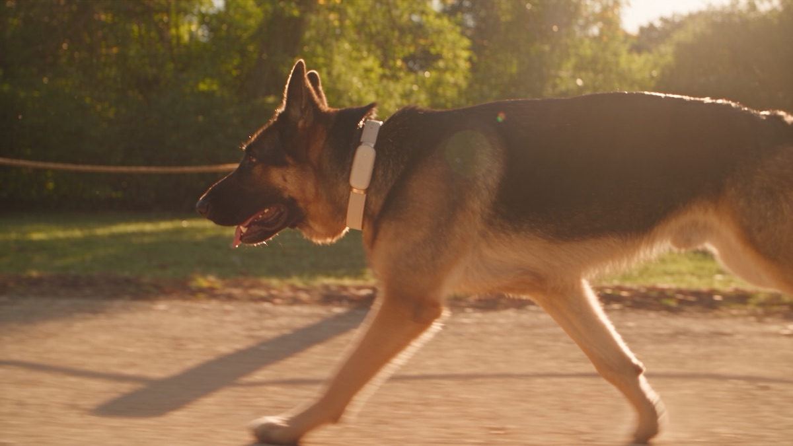

PAWLINK / THE SMART COLLAR
Their world.
Closer to yours.
Explore their world ↗A little more understanding.
A whole lot of love.Enter with sound ↓
A whole lot of love.Enter with sound ↓
PAWLINKAN ILLUSTRATIVE CONNECTION

ONE OF A KIND. / ALWAYS CONNECTED.RAY/ 01EVERY LITTLE SIGNAL.
A LITTLE MORE OF HIM.
A LITTLE MORE OF HIM.
02 / IN MOTIONCHOOSE A SIGNAL / GET CLOSERSIMULATED SIGNALS · NOT LIVE READINGS
SAFE ZONEInside.Ray is approaching the edge.
PAWLINK / BOUNDARY BREACH 01
RAY HAS CROSSED THE BOUNDARY.
YOU ARE CONNECTED TORAYGERMAN SHEPHERD / PAWLINK
He crossed the boundary.
The connection stays.
pawlinkTHEIR WORLD
Let them come to you.
The film couldn’t load. Please reload to try again.